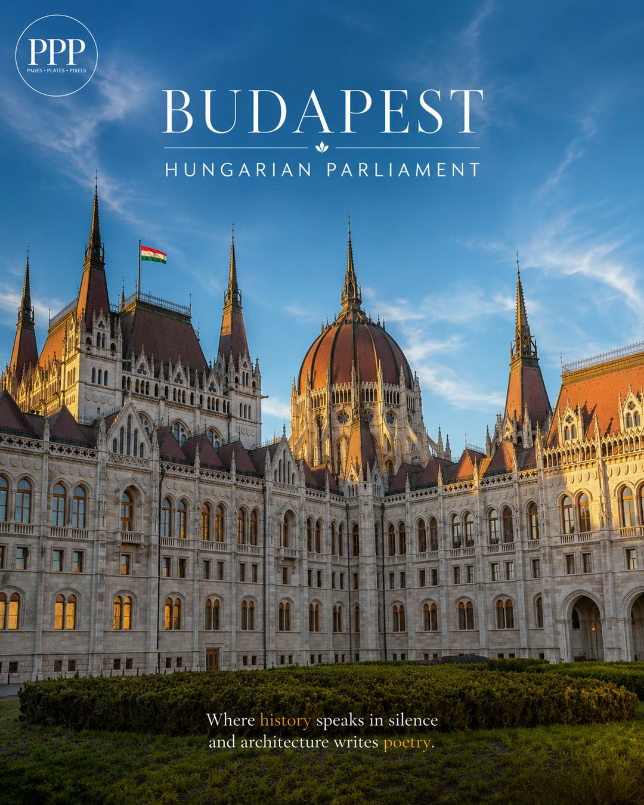
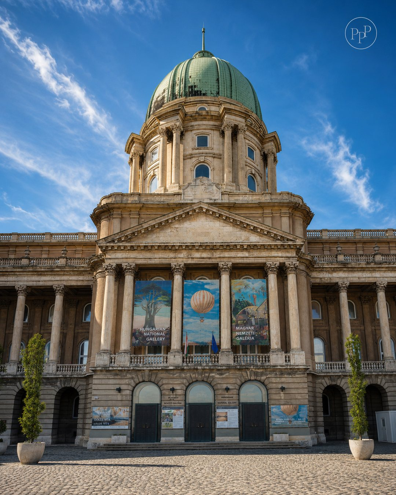
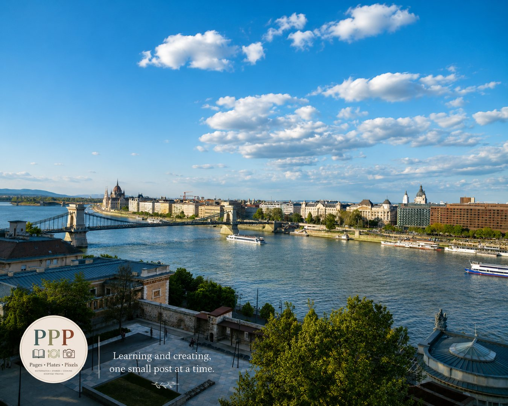
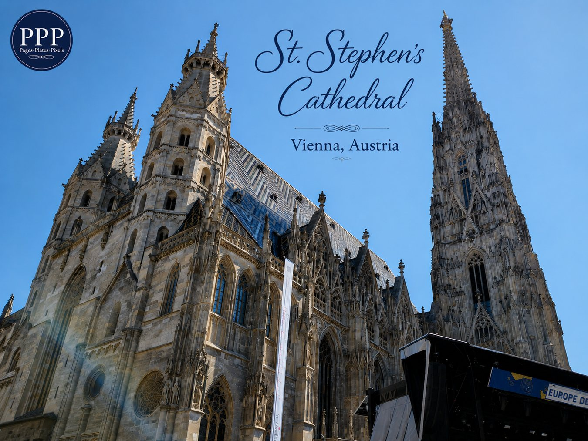

Photography
Gloriette, Schönbrunn Palace Gardens
A quiet reflection of Vienna’s royal beauty — calm sky, garden water, and the Gloriette standing gracefully above Schönbrunn.
Read more →Budapest, Vienna, travel views, architecture, sky, water, and everyday frames.
A quiet reflection of Vienna’s royal beauty — calm sky, garden water, and the Gloriette standing gracefully above Schönbrunn.
Read more →

Where history speaks in silence, and architecture writes poetry.
Read more →

Sky, river, and Parliament — Budapest feels different from above.
Read more →